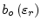
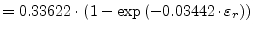
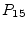
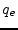
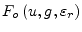
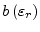
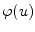
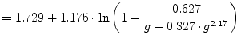
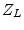
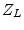

Parallel coupled microstrip lines are defined by the characteristic impedance and the effective permittivity of the even and the odd mode. The y- and S-parameters are depicted in section 9.22.
These quantities can very precisely be modeled by the following equations [31], [32].
Beforehand some normalised quantities (with microstrip line width  ,
spacing
,
spacing  between the lines and substrate height
between the lines and substrate height  ) are
introduced:
) are
introduced:
| (11.89) |
The applicability of the described model is
| (11.90) |
Static effective permittivity of even mode:
| (11.91) |
with
| (11.92) | ||
| (11.93) | ||
 |
(11.94) |
Static effective permittivity of odd mode:
| (11.95) |
with
| (11.96) | ||
|  | (11.97) | |
| (11.98) | ||
| (11.99) |
whence
refers to the zero-thickness single
microstrip line of width  according to [18] (see also
eq. (11.15)).
according to [18] (see also
eq. (11.15)).
The dispersion formulae for the odd and even mode write as follows.
| (11.100) |
The frequency dependence for the even mode is
| (11.101) |
with
| (11.102) | ||
|  | (11.103) | |
| (11.104) | ||
| (11.105) | ||
| (11.106) | ||
| (11.107) | ||
| (11.108) |
The frequency dependence for the odd mode is
| (11.109) |
with
| (11.110) | ||
| (11.111) | ||
| (11.112) | ||
| (11.113) | ||
| (11.114) | ||
| (11.115) | ||
| (11.116) | ||
|  | (11.117) |
Up to the maximum error of these equations is 1.4%.
The static characteristic impedance for the even mode writes as follows.
| (11.118) |
with
| (11.119) | ||
| (11.120) | ||
| (11.121) | ||
 |
(11.122) |
with  and
being again quantities for a
zero-thickness single microstrip line of width
and
being again quantities for a
zero-thickness single microstrip line of width  according to
[18] (see also eq. (11.15) and
(11.5)).
according to
[18] (see also eq. (11.15) and
(11.5)).
The static characteristic impedance for the odd mode writes as follows.
| (11.123) |
with
| (11.124) | ||
| (11.125) | ||
| (11.126) | ||
| (11.127) | ||
| (11.128) | ||
| (11.129) |
The accuracy of the static impedances is better than 0.6%.
Dispersion of the characteristic impedance for the even mode can be modeled by the following equations.
| (11.130) |
with
| (11.131) |
| (11.132) | ||
| (11.133) | ||
|  | (11.134) | |
| (11.135) |
and
| (11.136) | ||
| (11.137) | ||
| (11.138) | ||
| (11.139) | ||
| (11.140) | ||
| (11.141) | ||
| (11.142) | ||
| (11.143) | ||
| (11.144) | ||
| (11.145) | ||
| (11.146) |
With
being the single microstrip effective
dielectric constant according to [20] (see eq.
(11.26)) and single microstrip impedance
dispersion according to [21] (there denoted as  ,
see eq. (11.49)).
,
see eq. (11.49)).
Dispersion of the characteristic impedance for the odd mode can be modeled by the following equations.
| (11.147) |
with
| (11.148) | ||
| (11.149) | ||
| (11.150) | ||
| (11.151) | ||
| (11.152) | ||
| (11.153) | ||
| (11.154) | ||
| (11.155) |
with being the frequency-dependent power-current
characteristic impedance formulation of a single microstrip with width
 according to [21] (see
eq. (11.50)). Up to , the numerical error
of
and
is less than 2.5%.
according to [21] (see
eq. (11.50)). Up to , the numerical error
of
and
is less than 2.5%.
The equations given by E. Hammerstad and Ø. Jensen [18] represent the first generally valid model of coupled microstrips with an acceptable accuracy. The model equations have been validated in the range and , a range which should cover that used in practice.
The homogeneous mode impedances are
The effective dielectric constants are
| (11.157) |
with
| (11.158) | ||
|  | (11.159) |
whence and  denote eqs. (11.16) and (11.17) of the single microstrip line. The characteristic impedance of the single microstrip line also defined in [18] is given by eq. (11.5). The modifying equations for the even mode are as follows
| (11.160) | ||
|  | (11.161) | |
 |
(11.162) | |
| (11.163) | ||
| (11.164) |
The modifying equations for the odd mode are as follows
| (11.165) | ||
|  | (11.166) | |
| (11.167) | ||
| (11.168) |
Furthermore
| (11.169) | ||
| (11.170) | ||
| (11.171) | ||
| (11.172) | ||
| (11.173) | ||
| (11.174) |
The quasi-static characteristic impedance of a zero-thickness
single microstrip line denoted in eq. (11.156) can either
be calculated using the below equations with
 being the quasi-static effective dielectric constant defined by
eq. (11.15) or using eqs. (11.5) and
(11.15).
being the quasi-static effective dielectric constant defined by
eq. (11.15) or using eqs. (11.5) and
(11.15).
| (11.175) | ||
| (11.176) |
The errors in the even and odd mode impedances and were found to be less than 0.8% and less than 0.3% for the wavelengths.
The model does not include the effect of non-zero strip thickness or asymmetry. Dispersion is also not included. W. J. Getsinger [33] has proposed modifications to his single strip dispersion model, but unfortunately it is easily shown that the results are asymptotically wrong for extreme values of gap width.
In fact he correctly assumes that in the even mode the two strips are
at the same potential, and the total current is twice that on a single
strip, and dispersion for even-mode propagation is computed by
substituting  for  in eqs. (11.60) and
(11.61). In the odd mode the two strips are at opposite
potentials, and the voltage between strips is twice that of a single
strip to ground. Thus the total mode impedance is twice that of a
single strip, and the dispersion for odd-mode propagation is computed
substituting for in eqs. (11.60) and
(11.61).
for  in eqs. (11.60) and
(11.61). In the odd mode the two strips are at opposite
potentials, and the voltage between strips is twice that of a single
strip to ground. Thus the total mode impedance is twice that of a
single strip, and the dispersion for odd-mode propagation is computed
substituting for in eqs. (11.60) and
(11.61).
| (11.177) |
with
| (11.178) | ||
| (11.179) |
According to R.H. Jansen [34] corrected strip width values have been found in the range of technologically meaningful geometries to be
| (11.180) | ||
| (11.181) |
with
| (11.182) |
The author refers to the modifications of the strip width of a single
microstrip line given by Hammerstad and Bekkadal. See also
eq. (11.21) on page ![[*]](crossref.png) .
.
For large spacings  the single line formulae
(11.183) applies.
the single line formulae
(11.183) applies.
The loss equations given by E. Hammerstad and Ø. Jensen [18] for the single microstrip line are also valid for coupled microstrips, provided that the dielectric filling factor, homogeneous impedance, and current distribution factor of the actual mode are used. The following approximation gives good results for odd and even current distribution factors (modification of eq. (11.82)).
| (11.184) |